2024–2025 · Mixture design · Direct laboratory testing
Epoxy asphalt mixture performance
How can mixture strength and resistance to raveling be evaluated?
Research objective
This work evaluated epoxy asphalt mixtures through mixture design and complementary laboratory tests. Strength, raveling resistance, and volumetric characterization were considered as distinct parts of mixture evaluation.
My contribution
- Designed epoxy asphalt mixtures and prepared test specimens.
- Performed Marshall stability, indirect tensile strength (ITS), Cantabro loss, and theoretical maximum specific gravity (Gmm) tests.
- Organized experimental records and contributed to technical reports and manuscript preparation.
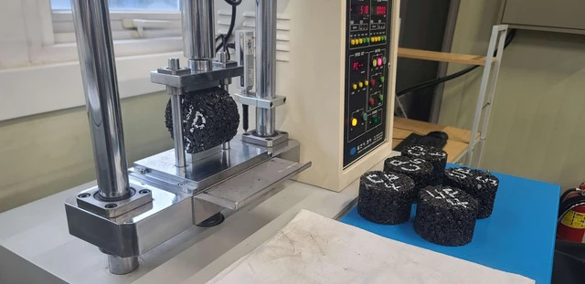
Indirect tensile strength testing
A cylindrical asphalt mixture specimen positioned for indirect tensile loading.
Method & research process
- 01Mixture design
- 02Specimen preparation
- 03Four complementary tests
Marshall stability and ITS characterize strength under different loading configurations. Cantabro testing evaluates resistance to material loss, using specimen mass before and after testing. Gmm contributes to volumetric characterization. Together, these tests connected mixture design to strength, material loss, and volumetric properties.
Mixture design & specimen preparation
The preparation workflow moves from weighing to mixing and compaction. These laboratory records illustrate asphalt-mixture methods; the precise material, batch and preparation session associated with each photograph have not all been verified.

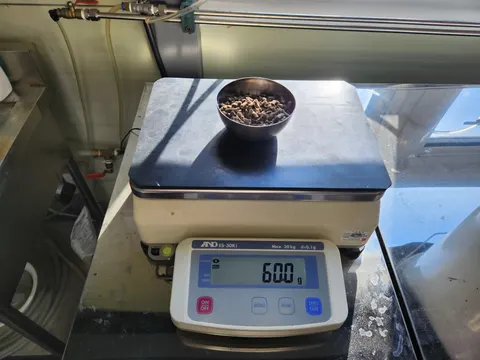
Weighing a small material portion
A small portion of granular material on a balance. The photograph does not establish the material identity or mixture proportions.

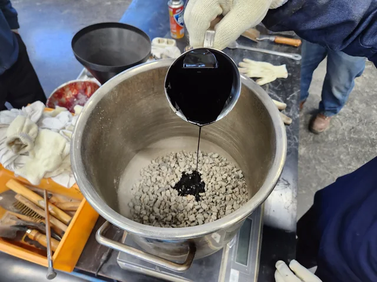
Combining aggregate and binder
A preparation record showing binder added to aggregate. The photograph does not establish the binder composition.

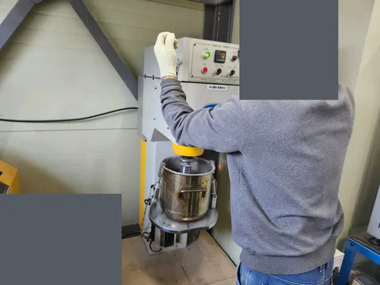
Laboratory mixing
Asphalt mixture preparation with a laboratory mixer.

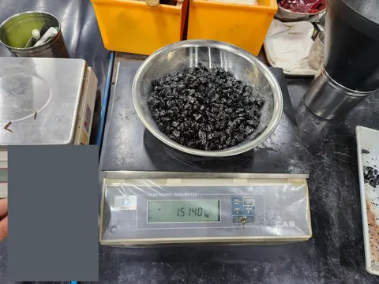
Weighing the mixture
Loose asphalt mixture on a balance.

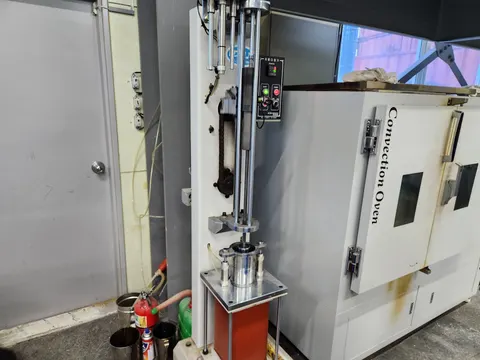
Cylindrical specimen compaction
Automatic compaction equipment and a cylindrical mold. The photograph does not specify the compaction count or mixture conditions.
Compacted specimen density
This supporting workflow examines volumetric properties for mixture design. Sealing and submerged weighing of a compacted specimen are kept separate from Gmm testing of loose mixture.

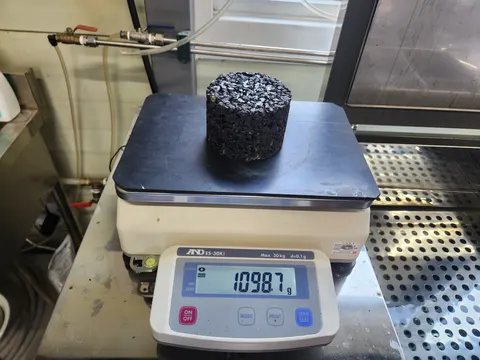
Weighing a compacted specimen
A cylindrical compacted specimen on a balance for mass measurement.

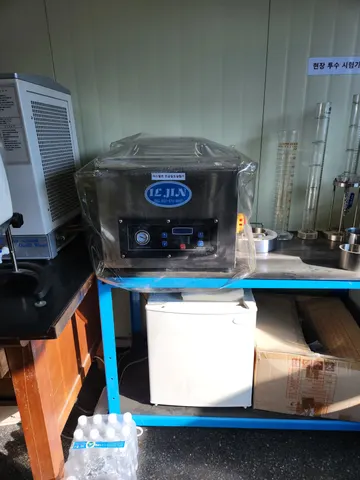
Specimen sealing equipment
Vacuum-sealing equipment used in the submerged-weighing workflow.

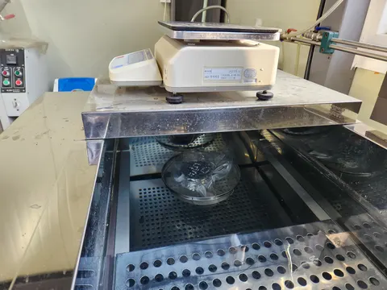
Submerged weighing
A sealed specimen suspended in water for mass measurement.
Marshall stability testing
This test evaluated the load resistance of cylindrical mixture specimens. I carried out mixture design and specimen preparation and organized the Marshall stability test results in the experimental records.
Indirect tensile strength testing
Diametral loading of a cylindrical specimen was used to evaluate the mixture’s tensile resistance.

Cantabro loss testing
This test evaluated material loss from mixture specimen mass before and after testing. It uses the rotating drum of an LA apparatus for a mixture test, distinct from LA abrasion testing of aggregate. Preparation, conditioning, the drum and weighing are shown first, followed by before-and-after observations from the report.

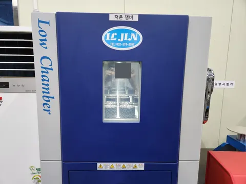
Specimen preparation & conditioning
The exterior of a chamber in the Cantabro specimen-conditioning records. The photograph does not establish temperature or duration.

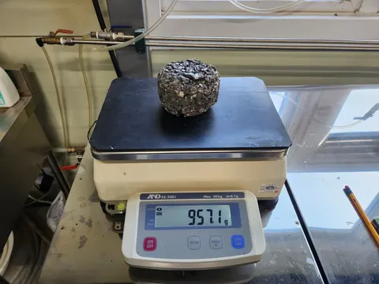
Specimen mass measurement
A mixture specimen on a balance in the Cantabro records. A single photographed mass reading does not establish a loss percentage.

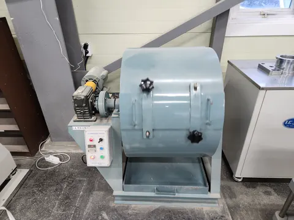
LA rotating drum
The exterior of the LA rotating drum used in the Cantabro sequence. No rotation count is inferred from the photograph.

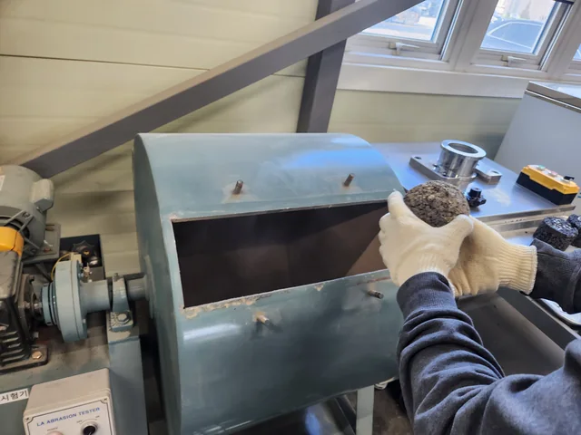
Placing a mixture specimen in the drum
Gloved hands holding a mixture specimen at the LA drum opening during Cantabro test preparation.

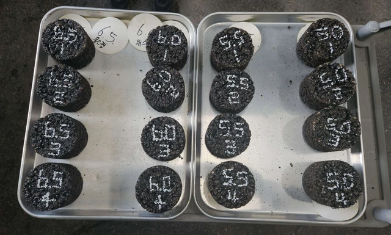
Before testing · report record
Cylindrical mixture specimens identified as the before-test condition in the test report.

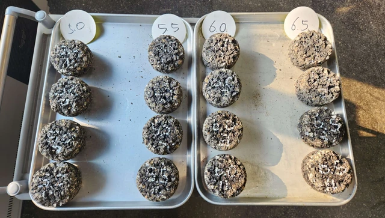
After testing · report record
Specimens identified as the after-test condition in the same report. The photographs alone do not establish individual specimen matching or a numerical mass loss.
Theoretical maximum specific gravity · Gmm
Loose mixture was used for theoretical maximum specific gravity measurement and volumetric evaluation. The photographs distinguish weighing from operation of the vacuum apparatus.

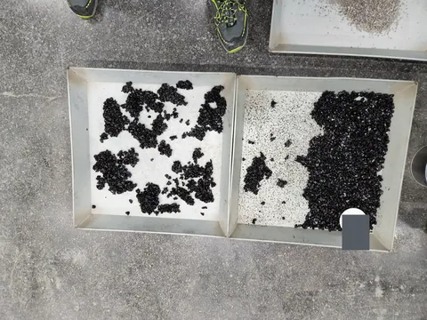
Preparing loose mixture
Loose mixture prepared for maximum theoretical density measurement.

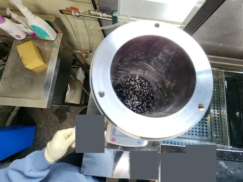
Weighing the sample and vessel
Loose mixture in a metal vessel during Gmm preparation.

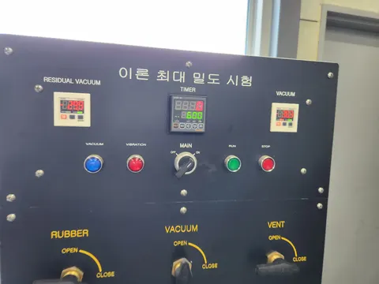
Vacuum and timer controls
The vacuum and timer controls of the Gmm apparatus. Displayed values are not reported as confirmed test conditions.

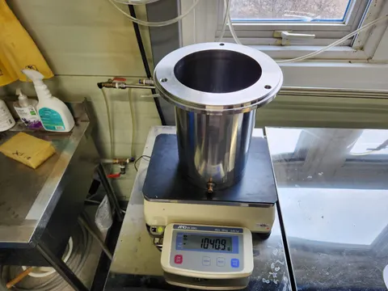
Recording vessel mass
A metal vessel on a balance during the test workflow.
Contribution & output
I carried out mixture design and four laboratory tests, organized the experimental records, and contributed to reporting and manuscript preparation. The related study was published in 2024, with me as second and corresponding author.
Related publication · DOI ↗